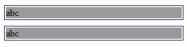
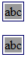

如果一个浮动元素或绝对定位元素的的 'width' 是 'auto'，并且它是一个非替换元素，那么它的宽度将会采用 shrink-to-fit 算法计算得出。
shrink-to-fit 的计算公式：min(max(preferred minimum width, available width), preferred width)
CSS2.1 并未给出 preferred minimum width、available width 和 preferred width 确切算法，通常，将内容中非明确的换行外的其他部分强制不换行来计算 preferred width；反之，尝试将内容尽可能的换行，以得到 preferred minimum width；available width 即该元素的包含块的宽度减去 'margin-left'，'border-left-width'，'padding-left'，'padding-right'，'border-right-width'，'margin-right' 的值以及任何存在的纵向滚动条的宽度。
关于浮动非替换元素宽度计算的详细资料，请参考 CSS2.1 规范 10.3.5 Floating, non-replaced elements 中的内容。
关于绝对定位非替换元素宽度计算的详细资料，请参考 CSS2.1 规范 10.3.7 Absolutely positioned, non-replaced elements 中的内容。
IE6 IE7(Q) IE8(Q) 中，如果父需要使用 shrink-to-fit 算法，并且其子元素触发了 hasLayout1 特性以及 'width' 特性值为默认的 'auto'，那么会导致父元素 shrink-to-fit 计算值有误。
【注】：hasLayout 特性是 IE 渲染引擎特有的概念，某些 HTML 元素本身即存在这个特性（如 BODY 元素），另外不天生具备此特性的元素则可以由某些 CSS 样式设置触发该特性。在 IE6 IE7 中 hasLayout 特性会带来很多与规范描述不符的 IE 特有 BUG。关于 hasLayout 特性更详细的描述可以参考 MSDN 中 "HasLayout" Overview 一节。
在 IE6 IE7(Q) IE8(Q) 中这种情况会导致局部布局错乱。
| IE6 IE7(Q) IE8(Q) |
|---|
分析以下代码：
<div style="width:300px">
<div id="A" style="float:left; border:1px solid #000066;">
<div style="background-color:#999999; margin:2px; zoom:1">abc</div>
</div>
<br />
<div id="B" style="position:absolute; top:50px; border:1px solid #000066;">
<div style="background-color:#999999; margin:2px; zoom:1">abc</div>
</div>
</div>
例子代码中 id 为 A 的 DIV 标记处于浮动流中，DIV 标记为非替换元素，宽度没有设置，将使用默认值 'auto '，根据规范定义，此时的 A 元素宽度计算应该遵循 shrink-to-fit 算法。
同理 id 为 B 的 DIV 标记处于绝对定位流中，其他设置与 A元素相同，其宽度计算同样应使用 shrink-to-fit 算法。
A 元素与 B 元素拥有相同的子元素 DIV，这个 DIV 使用了 "zoom:1" 样式使自身拥有了 hasLayout 特性，同时这个子元素没有显式性的设置宽度，宽度值为默认的 'auto'。
此代码在各浏览器中渲染如下：
| IE6 IE7(Q) IE8(Q) | IE7(S) | IE8(S) Firefox Chrome Safari Opera |
|---|---|---|
|  |  |
根据实际显示情况可以得出以下结论：
由于在 IE 浏览器中很难避免不触发 hasLayout 特性，因此建议在使用 ‘float’ ‘position:absolute' 这两个样式时，为 'width' 特性设置具体值。这样可以从根源上避免触发 shrink-to-fit 计算规则，由此来规避 IE6 IE7(Q) IE8(Q) 中由于 hasLayout 特性带来的渲染问题。
| 操作系统版本: | Windows 7 Ultimate build 7600 |
|---|---|
| 浏览器版本: |
IE6 IE7 IE8 Firefox 3.6.8 Chrome 7.0.517.5 dev Safari 5.0.2 Opera 10.62 |
| 测试页面: | ie_shrink_to_fit_bug_of_haslayout.html |
| 本文更新时间: | 2010-09-14 |
IE6 shrink-to-fit float position width 父元素 宽度 计算错误